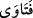
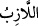
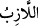
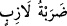
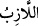
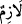

genç/delikanlı demektir. Bu mânâda fetvaya “fetva” denilmesi, müftînin fetva ile
hâdisenin cevabında soru soranı takviye etmesinden dolayıdır. Çoğulu ise
’dır.
Burada fetva sormaktan maksat, mağara halkının kıssasında olduğu gibi haber sormaktır.
Nitekim bu husus âyette şu şekilde ifade edilmiştir: “Öyle ise Ashâb-ı Kehf hakkında,
delillerin açık olması haricinde bir münakaşaya girişme ve onlar hakkında (ileri
geri konuşan) kimselerin hiçbirinden malumat isteme” (el-Kehf 18/22). Burada
gerçekten öğrenmek ve anlamak kastı yoktur. Bilakis sitem, azar ve serzeniş vardır.
Mânâ şöyledir: Ey Muhammed! Sitem ve azar olarak münazara ve tartışma kastıyla
Mekke müşriklerine sor.
“Yaratma” ve yaratılış “bakımından onlar” yani insanlar, Mekke’li müşrikler “mı”
yaratıcıya “daha zor,” ya da yaratılış ve bünye itibariyle daha sağlam ve kuvvetli
“yoksa bizim yarattığımız” melekler, gök, yer ve arasındakiler, doğular, yıldızlar,
delici parlak ışıklar ve azgın şeytanlar “mı?”
Âyette geçen “__WORD__” kelimesi, akıllıların diğer varlıklar üzerine galip olduğunu
göstermek için kullanılmıştır.
“Şüphesiz biz kendilerini” onların aslı olan Âdem’i “yapışkan” kumsuz “bir
çamurdan yarattık.” el-Müfredât’ta der ki: “__WORD__ demek iyice yapışıp duran demektir.
Vacip ve zorunlu olan şeye de “__WORD__ denilir. Zorunlu vuruş anlamına gelen “__WORD__
bu anlamda kullanılır. Keşfü’l-esrâr’da der ki: “__WORD__ kelimesindeki “__WORD__” harfi,
Mekke’ye “Bekke” denilmesinde olduğu gibi mim’den bedel olarak getirilmiştir.
Kelimenin aslı “__WORD__ şeklindedir.
Bu kavl-i ilâhîden murad edilen yeniden dirilişi ve âhireti ispat etmek, münkirlerin bu
durumu muhâl görmelerini reddetmektir. Bunun izahı şudur: İnsanların öldükten sonra
tekrar iâde edilip yeniden diriltilmelerinin onlarca muhâl oluşu ya maddenin buna
kabiliyetli olmamasındandır -ki insanların asıl maddeleri su ve toprağın karışımından
meydana gelen yapışkan çamurdur ve bunlar hala bu karışıma müsait halde bâkîdirler-
yahut da fâil-i muhtâr ve kâdir-i mutlak olan Allah’ın buna muktedir olmamasından olur
ki bu da bâtıldır. Zira bu kadar büyük eşyayı ve kâinatı yaratmaya muktedir olan Allah
Teâlâ bunlara nispetle yaratma gücünün ilgisi bakımından çok basit ve kolay olan insanı
yaratmaya ve öldükten sonra iâde edip tekrar diriltmeye de elbette kâdirdir. Özellikle
Allah Teâlâ insanları yapışkan çamurdan yaratmıştır. Allah Teâlâ’nın kudreti zâtîdir, hiç
değişmez. Allah Teâlâ’nın kudreti bütün yaratıklara göre hep eşit ve aynıdır. Ne zaman
ki kudret güneşi irâde ufkundan doğar, ibdâ’ havasında ve ihtirâ’ fezasında takdir olunan
zerreler gayet güzel bir sûrette zuhur ederler.
Yokluktan varlık tarafına gelmişiz, hepsi bu!
Şeyh Sâdî der ki:
Emriyle yokluktan varlık zuhur eder;